Menu actions and main toolbar
collect.png -- Profile Application
open.png -- Open experiment
compare.png -- Compare Experiments
add.png -- Aggregate Experiment
connect.png -- Connect Experiment
filter.png -- Filters
expandcollaps.png -- Library Visibility
color.png -- Function Colors
gear.png -- Settings
 gobackward.png -- Back
gobackward.png -- Back
goforward.png -- Forward
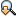
find_next.png -- Find Next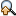
find_prev.png -- Find PreviousLeft-hand-side navigation panel
more_icon.png --
nav_bar_arrow.png --
 removetab3.png -- Remove view
removetab3.png -- Remove view
 removetab3Focused.png -- Remove view (focused)
removetab3Focused.png -- Remove view (focused)
Active Filters panel
undo.png -- Undo filter action
redo.png -- Redo filter action
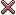
stop.png -- Remove all filtersfilter.png -- Add or remove filters
removetab3.png -- Remove filter
removetab3Focused.png -- Remove filter (focused)
Buttom Status bar
warning.png --
cancelProcess.png --
Popup tooltip
bubble_icon_16.png --
Tables
inclusive.png -- Inclusive metric
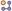
exclusive.png -- Exclusive metric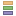
attributed.png --compare.png -- Compare
small_down.png --
small_up.png --
addtablecolumns.png -- Add columns...
Welcome
tab.png --
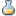
experiment.png -- Experimentexpgroup.png -- Experiment Group
Summary subview
inclusive.png -- Inclusive metric
exclusive.png -- Exclusive metric
attributed.png --
data.png --
Overview view
hot.png --
inclusive.png -- Inclusive metric
exclusive.png -- Exclusive metric
Timeline view
 timeline_plus.png -- Zoom In
timeline_plus.png -- Zoom In
 timeline_minus.png -- Zoom Out
timeline_minus.png -- Zoom Out
 timeline_zoom_reset.png -- Zoom Out
timeline_zoom_reset.png -- Zoom Out
apply_mtrs.png -- Zoom to Selected Time Range
undo.png -- Undo Zoom
redo.png -- Redo Zoom
backward.png -- Left One Event
forward.png -- Right One event
up.png -- Up One Event
down.png -- Down One Event
color.png -- Function Colors
gear.png -- Settings
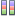
sample.png --profile.png --
i_o_usage_16.png --
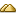
heaptrace.png --hwc.png --
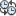
synctrace.png --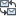
mpitrace.png --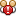
races.png --panhand.png --
Source view
godown.png --
goup.png --
warning.png --
removetab3.png -- Remove view
Callers-Callees view
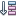
caller.png --func_item.png --
callee.png --
gobackward.png -- Back
goforward.png -- Forward
Experiments view
experiment.png -- Experiment
save.png -- Save
undo.png -- Undo
redo.png -- Redo
delete.png -- Delete
MPI views
zoom_in.png -- Zoom In
zoom_out.png -- Zoom Out
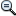
reset.png -- Reset Zoomapply_filter.png --
back_filter.png --
forward_filter.png --
Open Experiment dialog
experiment.png -- Experiment
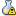
warnexperiment.png -- Experiment w/warnings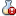
badexperiment.png -- Experiment w/errorsexpgroup.png -- Experiment Group
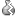
oldexperiment.png -- Old Experimentjar.png --
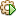
exe_elf.png --class.png --
Resolve Source File dialog
fileResolved.png -- Source file resolved
fileUnResolved.png -- Source file unresolved
Miscellaneous icons - used several places
blank.png --
undo.png -- Undo...
redo.png -- Redo...
stop.png -- Remove...
small_down.png --
small_left.png --
small_right.png --
small_up.png --
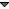
hollowArrowDown.png --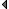
hollowArrowLeft.png --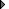
hollowArrowRight.png --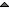
hollowArrowUp.png -- nextview.png --
nextview.png --
previousview.png --